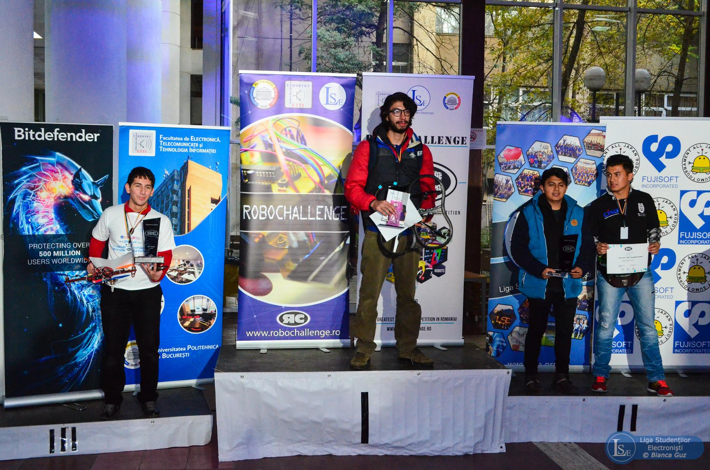

After having won the national tournament of Robotics, our team was invited to participate in the world cup RoboChallenge 2016. The rules where simple: each team shall program a Drone that is able to finish a closed loop circuit as many times as possible and as fast as possible with no human intervention whatsoever. The fastest Drone wins the competition.
Solution to the problem
In order to develop the necessary software for the drone to drive itself, a continuous feed of video was retrieved from the bottom camera. The video was analyzed frame by frame converting it to a black and white color matrix. This matrix served as the input of the Model.
For the Model, a closed loop feedback system was created in order to optimize a loss function that defined how well was the Drone following the road. The model creation was done in two stages: the first stage included a Machine Learning optimizer to determine the differential equation behavior of the drone; On the other hand, the second stage was the implementation of a predictive feedback controller in order to provide the optimal impulse for the drone to follow the drone (this was specially important in curves and changes in direction)
We won the first place in that competition.

